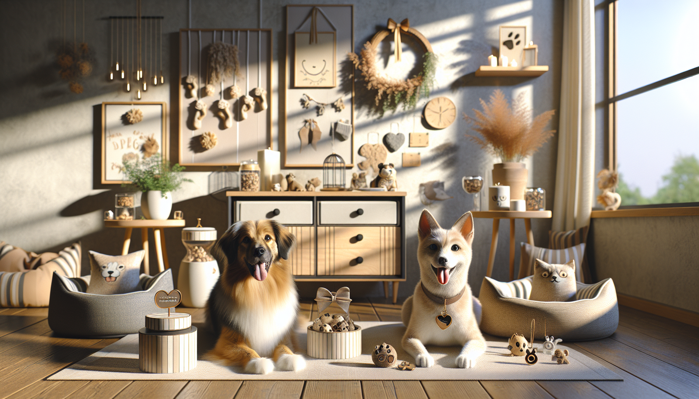

If you love spoiling your pets or shopping for thoughtful gifts for fellow animal lovers, Etsy continues to be one of the best places to discover unique, creative, and personalized finds. This year, trending pet products on Etsy are all about blending function with personality. Pet owners are looking for items that feel special, fit their lifestyle, and celebrate the bond they share with their furry companions.
From custom accessories to home decor that proudly features beloved pets, Etsy sellers are leading the way with handmade quality and personal touches you just do not get from mass-market stores. Whether you are a dog parent, cat lover, or gift shopper searching for something memorable, this guide covers the pet product trends that are winning hearts this year.
Let us take a look at the biggest Etsy pet trends and why they are so popular right now.
One of the strongest trends on Etsy this year is personalization. Pet owners want products that feel made just for their dog or cat, and Etsy is full of shops offering that extra-special touch. Personalized pet products are not only practical, but they also make pets feel like even more cherished members of the family.
Custom bandanas, engraved ID tags, monogrammed collars, and personalized feeding mats are especially in demand. Shoppers love being able to add a pet's name, a fun phrase, or even a matching design that fits their pet's personality. These items are also ideal for social media-worthy moments, seasonal photos, and everyday walks.
For gift shoppers, personalized pet accessories are an easy win. They feel thoughtful, useful, and one of a kind, which makes them perfect for birthdays, holidays, gotcha days, and new pet celebrations.
Another big category among trending pet products on Etsy this year is pet-themed decor. People love showing off their pets at home, and custom artwork is one of the most meaningful ways to do that. From elegant watercolor portraits to playful digital illustrations, custom pet art has become a go-to gift and keepsake.
Pet lovers are also decorating their homes with pieces that celebrate their furry friends in subtle and stylish ways. Think personalized leash holders, pet name signs, memorial frames, and custom pillows featuring a dog or cat's face. These products combine sentiment with design, making them especially popular for people who see their pets as family.
Top decor trends include:
This trend is especially appealing because it turns everyday living spaces into warm, personalized homes filled with reminders of beloved companions.
Dog owners are increasingly searching for accessories that make walks easier while still looking great. Etsy has become a favorite destination for fashionable, handmade dog walking gear that stands out from generic pet store options.
This year, trending products include matching leash and collar sets, waste bag holders, treat pouches, car safety accessories, and walking gear in trendy colors and patterns. Neutral tones, floral prints, checkered fabrics, and minimalist designs are especially popular. Buyers want products that feel elevated and coordinate with their own style.
Convenience also matters. Multi-functional walking sets that include storage for treats, poop bags, and keys are catching attention because they make daily outings smoother. Pet owners appreciate products that are both attractive and practical.
These Etsy finds appeal to dog lovers who want every walk to feel a little more enjoyable and put together.
Giftable pet products are having a huge moment on Etsy. More shoppers are looking for presents that include pets in celebrations, whether they are buying for a pet owner or for the pet itself. This trend has grown because people increasingly treat pets like family members, and they want gifts that reflect that love.
Birthday bandanas, gotcha day accessories, holiday ornaments, stocking stuffers, and pet lover gift boxes are all popular choices. Seasonal shopping in particular drives major interest in Etsy pet products, since handmade and personalized gifts feel more meaningful than generic retail items.
Popular gift ideas include:
If you are shopping for someone who adores their pet, Etsy makes it easy to find something heartfelt, charming, and memorable.
One reason Etsy remains so popular is that shoppers value craftsmanship. This year, pet owners are gravitating toward products that feel boutique, small-batch, and thoughtfully designed. Handmade pet products often offer better materials, more original styles, and a personal connection to the maker.
Instead of buying mass-produced items, many shoppers are choosing handcrafted pet beds, bows, sweaters, feeding stations, and toys. There is a growing appreciation for products that look beautiful in the home and are made with care. Buyers also like supporting small businesses that clearly love pets as much as they do.
Some standout trends in this area include:
For many pet parents, these purchases feel more personal and more aligned with the way they want to care for their animals.
It is impossible to ignore the influence of social media on pet shopping trends. Cute, personalized, and photo-ready products are performing especially well on Etsy because pet owners love sharing their dogs and cats online. If a product looks adorable in photos, coordinates with a home aesthetic, or helps create a fun milestone moment, it is likely to get attention.
Bandanas with witty sayings, holiday outfits, custom name signs, and themed gift boxes are all examples of products that photograph well and encourage sharing. This is one reason personalization continues to dominate. It adds uniqueness and makes every post feel more special.
Social media also encourages seasonal trend cycles. One month shoppers may be searching for spring florals and Easter accessories, while the next they are all about summer adventure gear or cozy fall products. Etsy sellers who stay on top of these moments often become favorites among pet owners who love celebrating every season with their pets.
For shoppers, this means there is always something fresh and fun to discover.
With so many amazing options available, it helps to shop with a few priorities in mind. The best Etsy pet products are not just cute. They should also be well-made, safe, and suited to your pet's needs and personality.
If you are shopping for a dog lover or cat owner, personalized gifts are often the most memorable choice. They show thoughtfulness and create an emotional connection that makes the item feel truly special.
The trending pet products on Etsy this year reflect something simple and wonderful: people love celebrating their pets in meaningful ways. Whether it is a custom bandana, a pet portrait, a stylish walking accessory, or a thoughtful gift, these products go beyond basic function. They help pet owners express love, create memories, and bring more personality into everyday life.
Etsy continues to stand out because it offers creativity, customization, and handmade charm all in one place. For pet owners, dog lovers, and gift shoppers alike, it is the perfect destination for finding products that feel personal and joyful.
If you are ready to discover unique items made with pet lovers in mind, shop personalized pet products at SnoutAndAbout on Etsy.